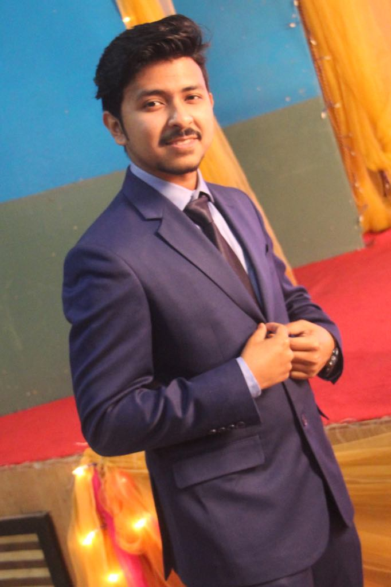

Md. Mushfiqur Rahman
House#23/D, Golapbag, Dhaka-1203
Email: mushfiqur.rahman@gmail.com
Phone: +8801675878004
Career Objective:
To pursue a highly rewarding career, seeking for a computer science and engineering position in challenging and
healthy work environment where I can apply my academic knowledge, work experience, micro and macro skills to work on innovative and target oriented projects in the field of software development.
Position Sought:(level entry) at Software Devlopment Company As a Developer
Educational Background:
B.Sc. in Computer Science and Engineering
- (Major in Web Development)
- CGPA 3.50 out of 4.00
- School of Engineering
- Passing Year 2018
- American International University of Bangladesh (AIUB)
Higher Secondary Certificate(H.S.C.)
- Result: 5.00 out of 5.00
- Science group
- Passing year: 2014
- Dhaka City College
Work Experience:
Attended Oracle DBA certification program
Worked as an effected team player to successfully complete different types of projects
Cisco certified by attending cisco certification course
Academic Research:
Completed a final year thesis project on Medical Appointment System” By using laravel Framework under the supervision of Ezazul Islam
Computer Expertise:
- Html,Php,Javascript
- Java
- C,C++ programming language
- C# .net
- Word press
- Microsoft Office Excel
- My Sql
Training:
- Completed a 3 month short course on Advance Web Development at American International University of Bangladesh (AIUB)
- Learning FullStack Webdevelopment in SIKHBESHOBAI
Participation:
- Participated in Cisco Training Program
- Participated in AIUB Programming Contest
- Participated in AIUB Gaming Contest
Personal Details:
- Father’s Name : Md. Moklesur Rahman
- Mother’s Name : Mohasin Ara Begum
- Nationality : Bangladeshi
- Date of Birth : 06.05.1994
- Religion : Islam
Referance:
Manzur H.Khan
Assistant Professor Department of Computer Science
Director Office of Student Affairs (OSA)
American international university Bangladesh
Contact:+8801718192209
Email:manzur@aiub.edu
Sincerely,
Md. Mushfiqur Rahman